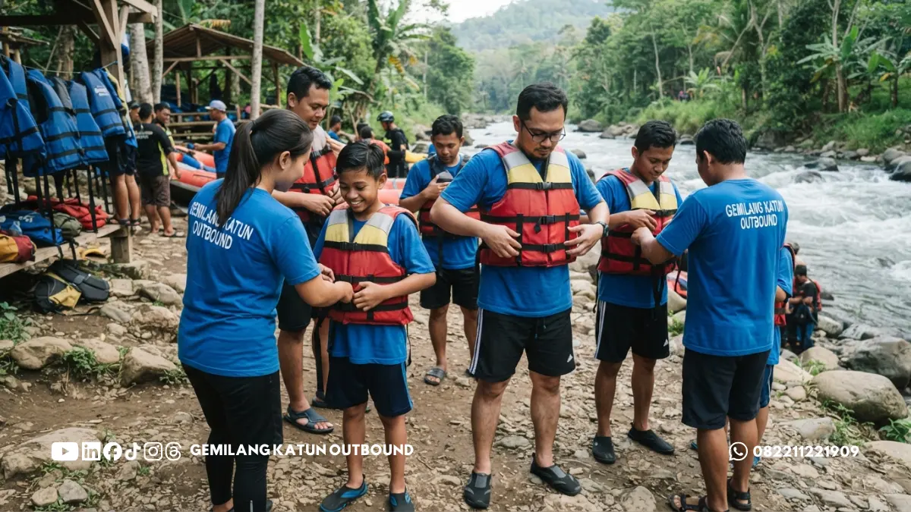

Daftar Isi Artikel
- Apakah Peserta yang Belum Bisa Berenang Boleh Ikut Rafting?
- Apa yang Membuat Rafting Relatif Aman bagi Pemula?
- Pertanyaan Apa yang Perlu Diajukan ke Provider?
- Bagaimana Cara Menyampaikan Peserta yang Belum Bisa Berenang?
- Siapa yang Sebaiknya Menunda atau Berkonsultasi Sebelum Ikut Rafting?
- Apa yang Dapat Dilakukan Pemula agar Lebih Siap?
Rafting untuk pemula umumnya dapat diikuti orang yang belum bisa berenang bila provider mengizinkan, pelampung sesuai ukuran dipakai, dan lintasannya ramah pemula.
Kemampuan berenang bukan satu-satunya penentu keselamatan pengarungan. Kebijakan provider, pemilihan lintasan, serta debit air pada hari kegiatan memegang peranan krusial.
Pelampung pas badan, helm standar, briefing teknis, dan pemandu berpengalaman adalah fondasi keselamatan utama yang wajib dipenuhi oleh setiap peserta.
Peserta yang belum bisa berenang perlu diinformasikan ke pihak provider sebelum hari pelaksanaan, agar persiapan teknis dan pembagian tim pendamping berjalan maksimal.
Apakah Peserta yang Belum Bisa Berenang Boleh Ikut Rafting?
Peserta yang belum bisa berenang boleh ikut rafting bila memakai pelampung, mengikuti briefing, dan lintasannya ramah pemula, meski kebijakan tiap provider berbeda.
Pelampung pada rafting dirancang menjaga tubuh tetap mengapung di permukaan air, sementara pemandu telah dilatih melakukan penyelamatan cepat di medan sungai.
Oleh karena itu, sebagian besar provider menerima pemula non-renang pada lintasan tertentu, namun sebagian lain membatasi saat debit air sungai sedang meningkat tinggi.
Perlu disadari bahwa pelampung membantu daya apung, namun tidak menghilangkan risiko sepenuhnya. Peserta yang tidak bisa berenang lebih rentan panik saat tercebur.
Kepanikan di dalam air dapat memperburuk keadaan. Menyembunyikan ketidakmampuan berenang demi ikut serta justru membahayakan diri sendiri dan rekan satu perahu.
Apa yang Membuat Rafting Relatif Aman bagi Pemula?
Rafting relatif aman bagi pemula bila didukung pelampung pas, helm pelindung, briefing keselamatan, pemandu berpengalaman, lintasan tenang, dan kondisi air sungai yang layak.
Sistem keselamatan arung jeram dibangun dari beberapa komponen yang saling menopang, sehingga kelemahan pada satu elemen dapat menurunkan standar perlindungan tim.
Perlengkapan yang Sesuai Ukuran
Pelampung wajib terpasang rapat dan tidak terangkat ke atas kepala saat ditarik. Helm harus pas di kepala tanpa terasa longgar selama pengarungan berlangsung.
Ukuran yang keliru pada anak-anak atau peserta bertubuh mungil adalah kendala nyata. Pastikan tim pemandu memeriksa kembali kuncian rompi pelampung sebelum turun ke air.
Briefing dan Latihan Dasar di Darat
Briefing memaparkan posisi duduk perahu, cara memegang dayung, aba-aba komando, teknik berpegangan tali, hingga prosedur darurat bila terlempar ke air.
Pemula wajib memperhatikan arahan ini dengan serius, karena pemahaman terhadap materi keselamatan saat briefing merupakan modal pertolongan pertama di atas sungai.
Pemandu dan Rasio Pendampingan
Pemandu mengatur kemudi perahu, memberi komando dayung serentak, dan mengambil tindakan cepat saat perahu membentur jeram atau bebatuan sungai.
Tanyakan pengalaman jam terbang pemandu serta rasio pendampingan perahu. Pendampingan skipper yang memadai di setiap perahu sangat menentukan ketenangan peserta.
Kondisi dan Karakter Arus Sungai
Tingkat kesulitan jeram dapat berubah mengikuti fluktuasi debit air. Lintasan yang tenang pada cuaca normal bisa menjadi lebih berat saat debit air sungai bertambah.
Keputusan pemandu untuk menunda jadwal atau memindahkan rute pengarungan wajib dihormati demi menjamin keamanan seluruh rombongan kegiatan luar ruang.

Pertanyaan Apa yang Perlu Diajukan ke Provider?
Tanyakan kebijakan peserta non-renang, tingkat kesulitan jeram, kelayakan alat keselamatan, sertifikasi pemandu, prosedur evakuasi, dan batasan kesehatan sebelum reservasi.
Gunakan daftar pertanyaan panduan berikut saat panitia rombongan menghubungi pihak penyedia layanan arung jeram:
Tentang Kebijakan Peserta
- Apakah peserta yang belum bisa berenang diperbolehkan ikut pada lintasan yang ditawarkan?
- Apakah ada syarat tambahan, misalnya pendampingan pemandu khusus atau pengisian formulir pernyataan?
- Berapa ketentuan batas usia serta batas berat badan minimum maupun maksimum peserta?
Tentang Lintasan dan Debit Air
- Termasuk kategori tingkat kesulitan atau grade apa lintasan sungai yang akan diarungi?
- Pada kondisi debit air seperti apa kegiatan arung jeram ditunda atau lintasannya dialihkan?
- Bagaimana metode provider dalam memantau debit sungai dan cuaca pada hari pelaksanaan?
Tentang Standar Keselamatan Lapangan
- Apa saja perlengkapan keselamatan yang disediakan, dan apakah ada ukuran khusus untuk anak?
- Bagaimana lisensi kualifikasi pemandu, dan berapa rasio pemandu terhadap jumlah peserta?
- Bagaimana prosedur penyelamatan darurat (rescue team), serta apakah paket sudah mencakup asuransi?
Mintalah jawaban tertulis dan catat nomor kontak penanggung jawab operasional. Provider yang transparan dan profesional akan menjelaskan prosedur keselamatan secara terbuka.
Bagaimana Cara Menyampaikan Peserta yang Belum Bisa Berenang kepada Provider?
Sampaikan jumlah peserta yang belum bisa berenang secara jujur sebelum hari kegiatan, lalu minta provider menjelaskan kebijakan pendampingan dan kelayakan lintasan.
Panitia dapat mengirim data ringkas: jumlah total peserta, jumlah yang belum mahir berenang, usia, serta catatan kondisi kesehatan yang relevan bila peserta bersedia.
Data ini membantu provider mengatur formasi perahu secara seimbang, seperti menempatkan peserta pemula bersama pemandu paling senior di posisi perahu yang stabil.
Hindari menyampaikan informasi kemampuan renang mendadak saat tiba di lokasi, karena provider membutuhkan waktu persiapan teknis untuk menambah personel pendamping.
Peserta yang masih dilanda rasa ragu berhak menolak turun ke sungai. Keputusan yang diambil secara sukarela jauh lebih aman dibandingkan paksaan rombongan.
Untuk gambaran menyeluruh tentang memilih paket dan menyiapkan rombongan, baca panduan rafting di Malang untuk rombongan secara mendalam.
Siapa yang Sebaiknya Menunda atau Berkonsultasi Sebelum Ikut Rafting?
Peserta dengan kondisi kesehatan tertentu, sedang hamil, mengidap riwayat masalah jantung, asma akut, atau cedera fisik sebaiknya berkonsultasi dengan tenaga medis.
Informasi dalam artikel ini bersifat edukasi umum dan bukan nasihat medis. Rafting melibatkan aktivitas fisik dinamis, guncangan arus, dan paparan suhu air dingin.
Kondisi medis seperti kelainan jantung, epilepsi, asma berat, serta cedera sendi memerlukan penilaian profesional dari tenaga medis yang memahami riwayat fisik peserta.
Peserta anak-anak juga butuh perhatian khusus. Pastikan batas usia terpenuhi, ukuran pelampung terpasang tepat, dan anak merasa nyaman mematuhi seluruh instruksi.
Apa yang Dapat Dilakukan Pemula agar Lebih Siap?
Pemula dapat bersiap dengan mempelajari alur kegiatan, berlatih tenang di air, mengenakan pakaian tepat, menyimak briefing, dan bertanya bila belum paham.
Beberapa langkah persiapan praktis yang sangat membantu kenyamanan peserta pemula saat berada di sungai antara lain:
- Lakukan adaptasi di air tenang tepi sungai agar terbiasa dengan daya apung rompi pelampung.
- Gunakan pakaian berbahan cepat kering (dry-fit) serta alas kaki air yang mengikat erat seperti sandal gunung.
- Hindari memulai pengarungan dalam kondisi perut terlalu lapar, terlalu kenyang, atau kurang istirahat.
- Simak seluruh materi pengarahan briefing keselamatan dan jangan ragu mengajukan pertanyaan.
- Patuhi seluruh aba-aba instruktur pemandu dengan cepat dan tetap tenang selama di perahu.
Sikap tenang adalah modal terbesar bagi pemula. Jika merasa tegang di tengah jeram, segera sampaikan pada pemandu agar ritme perahu disesuaikan dengan nyaman.
Sampaikan kondisi peserta secara jujur sebelum keberangkatan, ajukan pertanyaan tertulis seputar keselamatan dan lisensi pemandu, serta pastikan kondisi tubuh dalam keadaan prima.